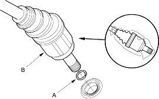
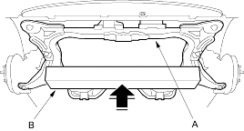
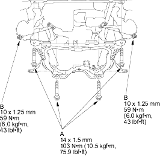
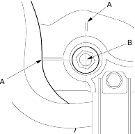

- Install new set rings (A) on the left and right driveshafts (B).

- Install the right and left driveshafts (see page 16-18). While installing the driveshafts in the differential, be sure not to allow dust or other foreign particles to enter the transmission.
NOTE:
- Clean the areas where the driveshafts contact the transmission (differential) with solvent or carburettor cleaner and dry with compressed air.
- Turn the right and left steering knuckle fully outward and slide the driveshafts into the differential until you feel its set ring engage the side gear.
- Support the sub-frame (A) with a 4 x 4 x 40 in. piece of wood (B) and lift it up to the body.

- Loosely install the 4 sub-frame mounting bolts (A) and the 10 x 1.25 mm bolts (B).

- Align the reference marks (A) with the centre of the bolt heads (B), then tighten the bolts to the specified torque.
